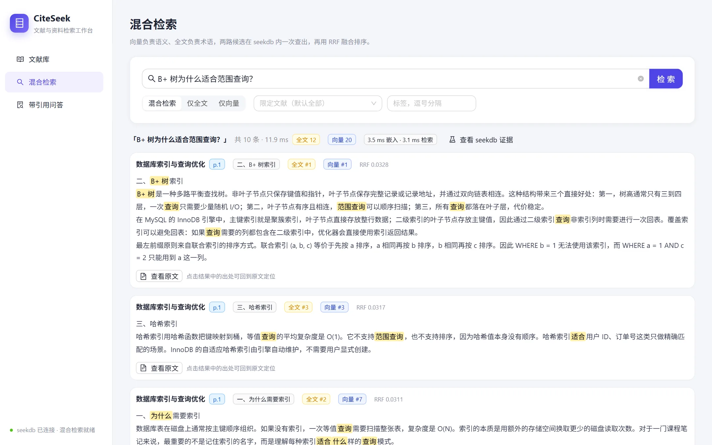

术语与语义各管一半
「B+ 树」「KV cache」需要精确匹配；「为什么树形结构能把磁盘读取次数控制得很少」则需要语义理解。单一检索方式总有一边失效。
Qoder × OceanBase 比赛项目
CiteSeek 是一个本地运行的文献与资料检索工作台。导入 PDF、Markdown 或 TXT 后， seekdb 的全文索引与向量索引同时召回，再用 RRF 融合排序——每条结果都能定位到页码和原文那一句。

问题
论文 PDF、课程笔记、实验记录分散在下载目录和笔记软件里。只靠关键词会漏掉换一种说法的表述，只靠通用问答又拿不出可核对的出处。
「B+ 树」「KV cache」需要精确匹配；「为什么树形结构能把磁盘读取次数控制得很少」则需要语义理解。单一检索方式总有一边失效。
只给出答案没有页码，等于让人回去重新翻 PDF。研究资料的价值，在于每句话都能落回具体文献与章节。
不知道用了哪个索引、两路候选如何合并、筛选是否真的下推。出现问题只能凭感觉调参，无法复现。
功能
拖拽导入 PDF、Markdown、TXT，按 SHA-256 自动去重。索引进度、标签、阅读状态、重建与删除都在一张表里完成。
示例资料：3 篇 · 6 页 · 20 个文本块
混合、全文、向量三种模式随查随换。文档与标签筛选同时下推到两路，命中词逐处高亮，还能看到每路排名与 RRF 分数。
B+ 树查询：全文 #1 · 向量 #1 · 10 条结果
用抽取式方法组织答案，不调用大模型。每条结论直接来自检索到的原文句子，标注文献、页码与页内字符区间。
点击引用即可跳回那一页并高亮
每次检索留存 SQL、参数、EXPLAIN、双通道候选与耗时。界面里的证据抽屉和 data/logs/retrieval.jsonl 都能复核。
EXPLAIN 同时出现全文与向量索引扫描
界面
以下画面来自 docker compose 启动后的实际环境，示例资料为自撰笔记生成的 PDF。
实现
CiteSeek 只用一个 seekdb 实例，就把全文索引、向量索引和业务表放在同一个库里。混合检索不是应用层拼两次查询，而是一条 SQL 同时召回。
FULLTEXT INDEX ... WITH PARSER ik 负责中文术语，VECTOR INDEX ... HNSW 负责语义相似。
UNION ALL 后在应用层做 RRF 融合（k=60），不依赖额外检索引擎。
EXPLAIN 显示 TEXT RETRIEVAL SCAN 与 VECTOR INDEX SCAN；每次检索的 SQL 和参数都会保存。
WITH fts AS (
SELECT c.id, MATCH(c.text) AGAINST(%s) AS score
FROM chunks c
WHERE MATCH(c.text) AGAINST(%s)
ORDER BY score DESC LIMIT %s
), vec AS (
SELECT c.id, COSINE_DISTANCE(c.embedding, %s) AS dist
FROM chunks c
ORDER BY dist APPROXIMATE LIMIT %s
)
SELECT 'fts', id, score, NULL FROM fts
UNION ALL
SELECT 'vector', id, NULL, dist FROM vec;| 2 | TEXT RETRIEVAL SCAN | c(ft_text) |
| 4 | VECTOR INDEX SCAN | c(vidx_emb) |
| 5 | UNION ALL | |
| 6 | TEMP TABLE ACCESS | fts |
| 7 | TEMP TABLE ACCESS | vec |评测
固定 21 条中文查询，Top-10。相关判定为「命中正确文献且章节匹配」，MRR@10 取第一条相关结果的倒数排名。评测在容器内对示例资料执行。
| 模式 | Hit@10 | MRR@10 | 章节召回@10 | p50 延迟 |
|---|---|---|---|---|
| hybrid | 100.00% | 0.8190 | 97.62% | 5.2 ms |
| fts | 95.24% | 0.8270 | 95.24% | 4.5 ms |
| vector | 100.00% | 0.7159 | 100.00% | 4.5 ms |
怎么读：全文检索在术语原样出现时很强，但换一种说法会漏；向量检索 Hit@10 高，首次命中排名却更低。混合检索把两路候选融合后，首次命中排名明显好于单走向量，同时保持全部命中。
语料仅 3 篇示例资料、20 个文本块，指标用于验证链路与回归，不代表大规模语料上的绝对水平。逐条结果与复现命令见 检索评测。
运行
需要 Docker Desktop。seekdb 与应用都通过 compose 启动，数据保存在 citeseek/data，不依赖外部 API 或在线模型。
cd qoder/citeseek/deploy
docker compose up -d --buildcd ..
pip install httpx
python scripts/verify_library.py http://127.0.0.1:8080示例 PDF 已随仓库提供；仅在需要从 Markdown 重新生成时才运行 make_samples.py（依赖 reportlab）。
http://127.0.0.1:8080 · API 文档 /docs · 健康检查 /api/ready
开发过程
项目按「每个阶段可验收」的节奏推进：先跑通资料库，再验证混合检索，最后补前端、评测与站点。每阶段都留下可复现的验证脚本与结果。
解析、切块、嵌入、索引与去重；先用脚本验证 3 篇 PDF 的 20 个文本块全部入库。
落地 seekdb 双索引与单 SQL 召回，核对 EXPLAIN、通道排名与 RRF 结果。
抽取式回答、页码与字符区间引用、导出与历史记录。
资料库、检索、问答、文献详情四个页面；把证据与原文定位做成可交互的抽屉。
固定查询集与指标脚本，真实界面截图，运行说明与验证样例，发布项目网站。
各阶段的任务拆解、Qoder 承担的工作与复盘见 Qoder 开发记录。
材料